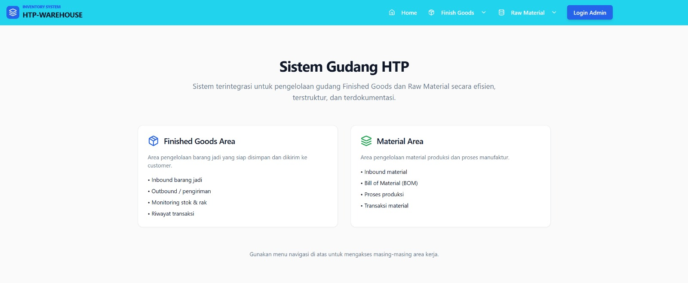
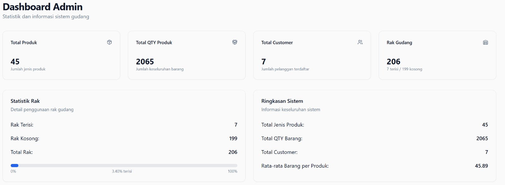
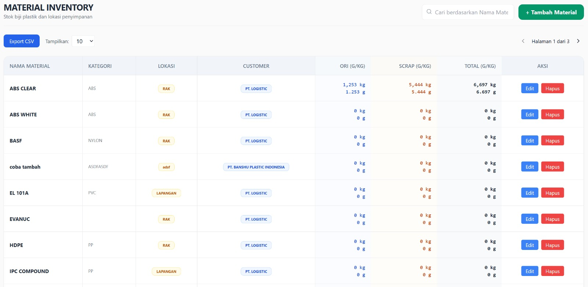
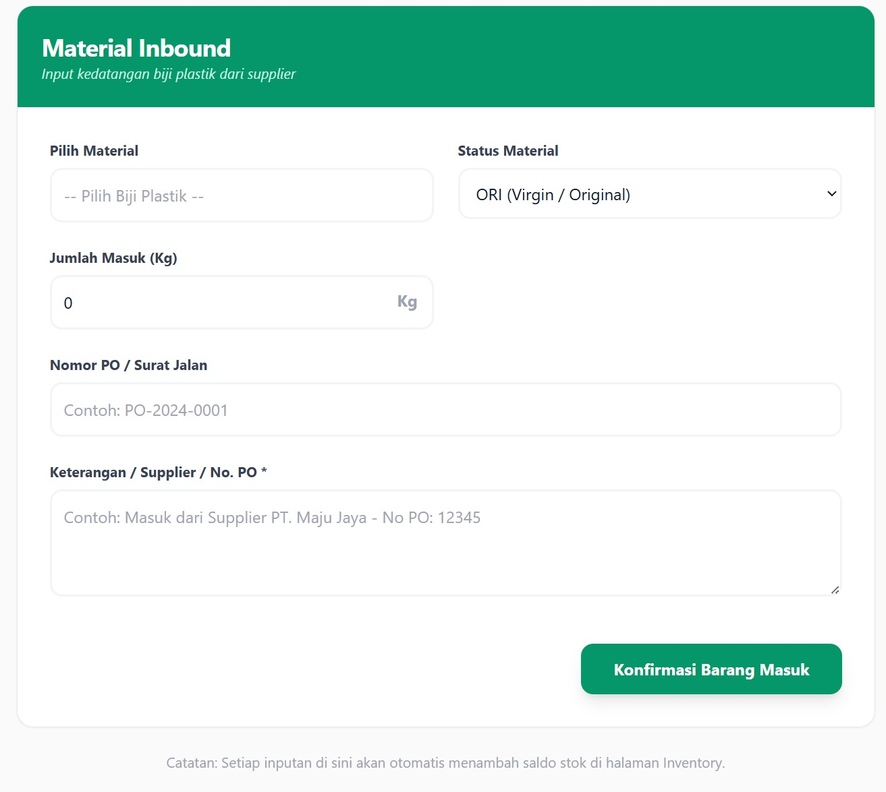
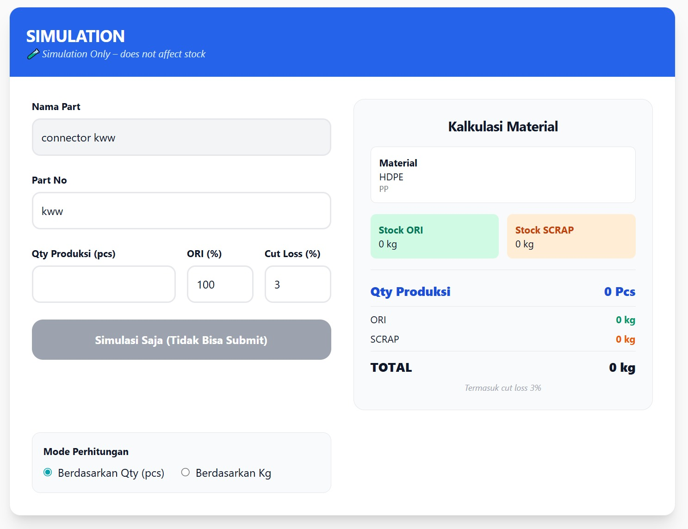
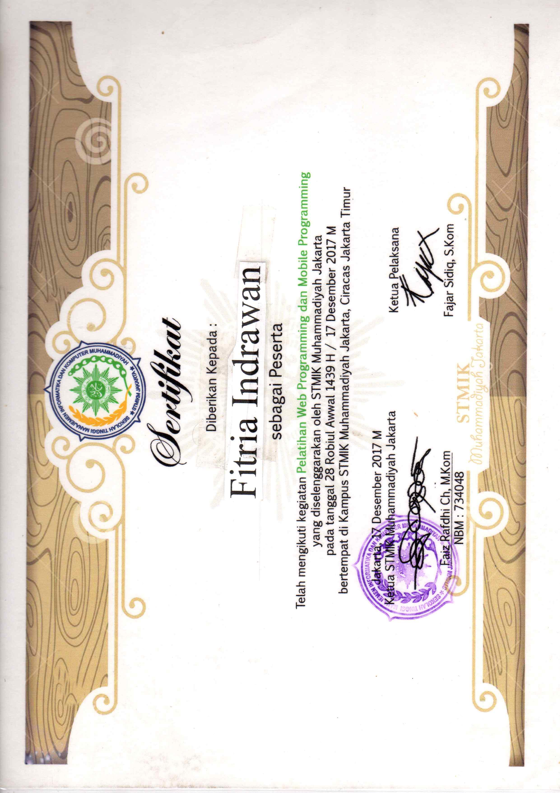

Hello,
I'm Fitria Indrawan
Information Systems Student | Aspiring Software Engineer
I have a background in manufacturing operations and production administration, with experience in data handling and stock management. Currently learning software development using JavaScript and Python to build practical automation solutions.
ABOUT ME
EMPLOYEE BADGE
PT HYUNTECH PERKASA
FITRIA INDRAWAN
PRODUCTION & INVENTORY ADMIN
ID Number
HTPCN-26-001
Department
Operations
Valid From
2026-01-15
Valid Until
2027-01-15
Authorized
Saya adalah mahasiswa Sistem Informasi dengan pengalaman di bidang operasional manufaktur. Saya memiliki minat besar dalam membangun sistem otomasi yang meningkatkan efisiensi kerja.
Saat ini, saya fokus mengembangkan kemampuan Software Engineering dengan mempelajari JavaScript, Python, dan ekosistem Web Development untuk menciptakan solusi praktis bagi industri.
MY PROJECT
Proyek yang mencerminkan pengalaman dan proses belajar saya dalam membangun sistem yang bermanfaat
1. Sistem Menejemen FinishGoods & Material
"Sistem Manajemen Inventaris Digital untuk otomasi pelacakan stok barang jadi dan kalkulasi material secara real-time, menggantikan proses manual guna meningkatkan akurasi data produksi."

⚠ Permasalahan :
Dalam operasional sehari-hari, pencatatan stok dan perhitungan material masih dilakukan secara manual, sehingga sering terjadi kesalahan data, keterlambatan, dan kesulitan dalam melakukan tracking alur barang.
✅ Solusi :
Saya mengembangkan sistem sederhana untuk mendigitalisasi pengelolaan stok serta mengotomatiskan perhitungan material, sehingga proses menjadi lebih akurat, cepat, dan terorganisir.
💡 Fitur Utama :
- ➡ Input data cepat menggunakan barcode scanner
- ➡ Proses stock opname secara digital
- ➡ sistem FIFO untuk memastikan rotasi produk berjalan dengan benar
- ➡ perhitungan material otomatis berdasarkan produksi
📈 Hasil / Dampak :
- ➡ mengurangi kesalahan perhitungan manual
- ➡ meningkatkan akurasi stock
- ➡ Mempercepat proses pelaporan dan monitoring
1. Dashoboard Admin
tampilan bagian admin memuat seluruh informasi yang dibutuh dari jumalah customer sampai dengan jumlah produk

2. Visual Stock material
menampilkan jumlah stock material secara realtime berdasarkan gramasi dan juga kilogram

3. Proses input material masuk
Proses input dan juga Output penggunaan material pada saat bounding

4. Simulasi page
terdapat simulasi page untuk membantu perhitungan secara akurat untuk conversi gramasi to QTY atau sebaliknya

2. Another Project
Experience
Pengalaman Pekerjaan
perjalanan saya dalam dunia kerja dan kontribusi yang telah say berikan di setiap peran yang saya emban
Monitoring Produksi
Merancang dan mengoptimalkan sistem pelaporan berbasis cloud (google sheets) yang terintegrasi untuk berbagai devisi (HRD, PPIC, dan Maintenance), Sistem ini memantau secara real-time metrik kritikal seperti NG Rate (tingkat kegagalan produk), Output produksi, serta performa efisiensi tenaga kerja (manpower performance).
Menejemen Invetaris & Integrasi Data
bertanggung jawab penuh atas akurasi data pada sistem WMS perusahaan. Melakukan rekonsiliasi berkala antara stok fisik dan data digital melalui SockOpname mingguan, serta berhasil menjaga tingkat akurasi saldo stock.
Analisa Operasional
Menganalis tren kerugian produksi dan data NG untuk memberikan rekomendasi strategi bagi manajemen dalam upaya perbaikan efisiensi mesin dan proses produksi.
Kendali kualitas & Labelitas
mengelola seluruh alur dokumentasi dan labelitas produk sesuai kebutuhan mesin produksi untuk memastikan kelancaran operasional manfaktur
Stock Opname
Melakukan rekonsiliasi stok melalui stock opname rutin untuk memastikan sinkronisasi antara data sistem dan stok fisik.
Administrasi produksi & inventory
- ➡Administrasi dan pelaporan produksi harian
- ➡Monitoring stok finish goods dan alur barang
- ➡Rekonsiliasi data inventory fisik dan sistem
- ➡Stock opname harian, mingguan, dan bulanan
-
integrasi data instalasi pemerintahan,
Bertanggung jawab dalam proses entri dan validasi data nasabah untuk proyek kolaborasi dengan isntalasi BUMN (perpajakan/PBB), memasitikan seluruh informasi terintegrasi dengan benar kedalam sistem.
-
Audit & verifikasi dokumen,
Melakukan verifikasi mendalam terhadap kelengkapan dokumen hukum, termasuk pengajuan data baru, perubahan data, serta dokumen ahli waris untuk menjamin kepatuhan terhadap standar regulasi yang berlaku.
-
Manajemen Database,
Mengelola dan merekapitulasi data nasabah ke dalam sistem database internal perusahaan dengan tingkat ketelitian tinggi untuk menjaga kualitas dan reabilitas informasi.
-
Pengawasan kualitas & inventaris:,
melakukan verifikasi dan sorting produk untuk menjamin kesesuaian antara fisik barang dengan data sistem, guna mencapai terget zero discrepancy (nolselisih).
-
Pengendalian kerugian (loss prevention):,
secara aktif menekan Nilain selisih barang (NSB) digudang (warehouse) melalui rekonsiliasi stok yang ketat, memastikan integritas inventaris tetap terjaga.
-
Manajemen kadaluarsa (FEFO/FIFO):,
Mengelola sistem keluar masuk barang dengan mamastikan produk yang dikirim memiliki masa kadaluarsa (expired date) yang aman, guna menjaga kualitas produk dan kepuasan pelanggan.
-
Instalasi dan konfigurasi perangkat BTS:,
Melakukan instalasi dan setup perangkat jaringan BTS termasuk antena microwave dan sector untuk mendukung implementasi jaringan WAN.
EDUCATION
Pendidikan
Perjalanan belajar saya di Universitas Terbuka dan SMK Otomindo sebagai penguasaan teknologi untuk mendukung karir saya di bidang IT dan Pengembangan Sistem.
- Mempelajari konsep sistem informasi, pemrograman, basis data, struktur data, algoritma, dan manajemen sistem informasi untuk mendukung solusi teknoligi yang efektik dan efisien.,

- Mendalami infrastruktur jaringan komputer, instalasi perangkat keras telekomunikasi, serta dasar-dasar administrasi server, jaringan, mikrotik, dan perangkat jaringan lainya,
CERTIFICATE
Exceel Advance
Menyelesaikan pelatihan Microsoft Excel tingkat lanjutan yang mencakup penggunaan formula kompleks, pengolahan data, analisis laporan, serta pembuatan dashboard dan otomatisasi pekerjaan administrasi menggunakan fitur-fitur Excel.

Web Programing & Mobile programing
Mengikuti pelatihan dasar Web Programming dan Mobile Programming yang membahas konsep pengembangan aplikasi, struktur website, logika pemrograman, serta pengenalan teknologi pengembangan aplikasi berbasis web dan mobile.
Huawei BTS & Microwave Instalations
Menyelesaikan pelatihan instalasi perangkat telekomunikasi Huawei yang mencakup pemasangan perangkat BTS (Base Transceiver Station), Microwave Link, konfigurasi perangkat jaringan, serta prosedur implementasi infrastruktur telekomunikasi lapangan.
How To Survive After High School
Mengikuti seminar pengembangan diri yang membahas persiapan karier, pendidikan lanjutan, pengembangan keterampilan, serta perencanaan masa depan setelah menyelesaikan pendidikan menengah.